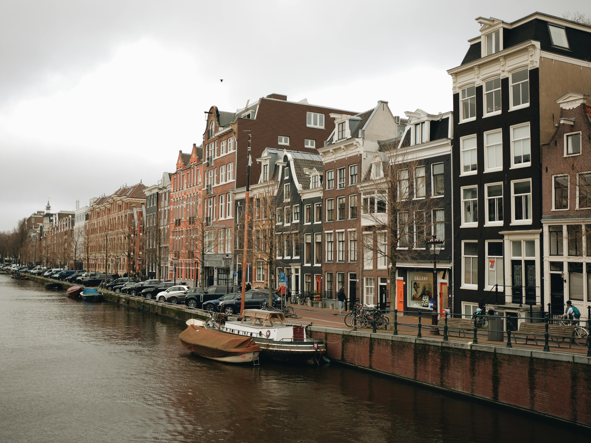

Waarom wij?
Heeft u professionele schoonmaak nodig voor uw woning of kantoor? Dan ben je bij ons aan het juiste adres! Schoonmaken is geen gemakkelijke taak, en kwalitatief hoogstaand schoonmaken is zelfs nog moeilijker! Gelukkig kunt u erop vertrouwen dat wij al het vuile werk opknappen. Wij zijn een team van professionele schoonmakers die er alles aan doen om uw huis of kantoor netjes en schoon te houden. Wij werken snel, professioneel en benaderen elke opdracht individueel. Bij ons zult u zeker blij zijn met het effect. Wij garanderen een werkelijk hoge kwaliteit van de dienstverlening. Ook in het weekend zijn wij bereikbaar en komt onze specialist bij u langs op een voor u geschikt tijdstip.
Wat maakt ons uniek?
- Professionaliteit en ervaring – Al jaren bieden wij schoonmaakdiensten aan in diverse gebouwen, met oog voor elk detail.
- Familiekarakter van het bedrijf – Dankzij nauwe klantrelaties en flexibiliteit passen wij onze diensten aan op individuele behoeften.
- Stiptheid en betrouwbaarheid – Wij zorgen ervoor dat elke ruimte perfect schoon is, altijd op tijd.
Wij bieden
- Schoonmaak van kantoren en commerciële ruimtes
- Onderhoud van netheid in kinderdagverblijven en onderwijsinstellingen
- Schoonmaakdiensten voor kantoren en overheidsinstellingen
- Reiniging van vlakke oppervlakken in sportscholen en sportfaciliteiten
- Regelmatige schoonmaak in particuliere woningen
- Onderhoud van netheid in hotels, pensions en accommodaties
Waarom voor ons kiezen?
- Professionele service en hoge kwaliteit
- Concurrerende prijzen en transparante aanbiedingen
- Individuele benadering van klanten
- Flexibiliteit in het plannen van schoonmaakdiensten
Laat ons voor de netheid zorgen, zodat jij je kunt concentreren op wat echt belangrijk is!

Huizen en Appartementen Schoonmaak

Kantoren Schoonmaak

Hotels Schoonmaak

Sportschool Schoonmaak

Scholen Schoonmaak